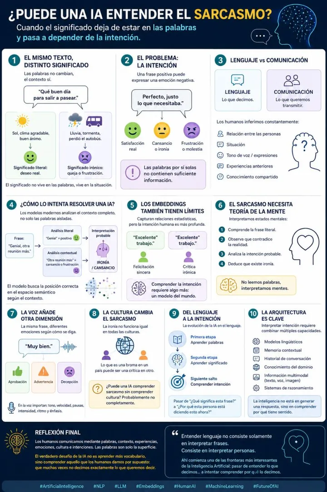

Tema 08 · Embeddings & PLNPublicación1 min de lectura
¿Puede una IA detectar cuando le estás tomando el pelo?
Publicación con la misma frase y significados opuestos: el sarcasmo como gran reto para la IA actual.
- Sarcasmo
- IA
- Contexto
¿Puede una IA detectar cuando le estás tomando el pelo?
"¡Qué buen día para salir!" ☀️ vs "¡Qué buen día para salir!" ️
Mismas palabras, significados opuestos. El sarcasmo es uno de los mayores desafíos para la inteligencia artificial actual. Mientras nosotros lo captamos al instante, las IA necesitan analizar contexto, tono, intención y mucho más.
🧠 La pregunta del millón: ¿Están las IA listas para entender el sarcasmo humano o seguiremos hablando idiomas diferentes?
Descubre en esta infografía qué necesita una IA para comprender realmente lo que decimos (y lo que queremos decir 😉).
💬 Cuéntame: ¿Crees que las IA alguna vez entenderán el sarcasmo al 100%? ¡Te leo! 👇
#InteligenciaArtificial #Sarcasmo #IA #MachineLearning #NLP #Tecnología #Innovación #Humor #ComunicaciónDigital #FuturoIA #ProcesamientoDeLenguaje #CuriosidadesTech


Ver imagen a tamaño completo